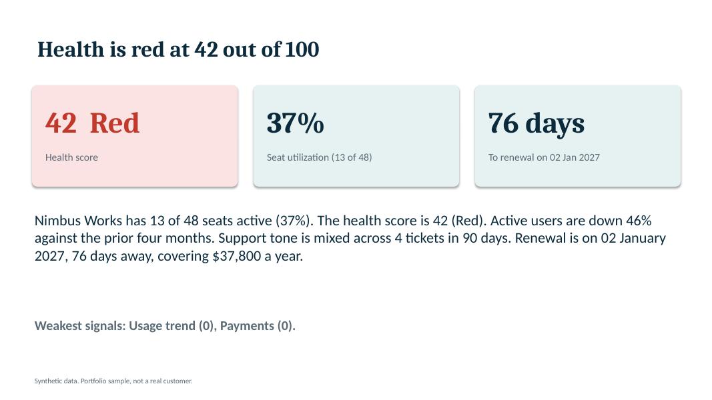
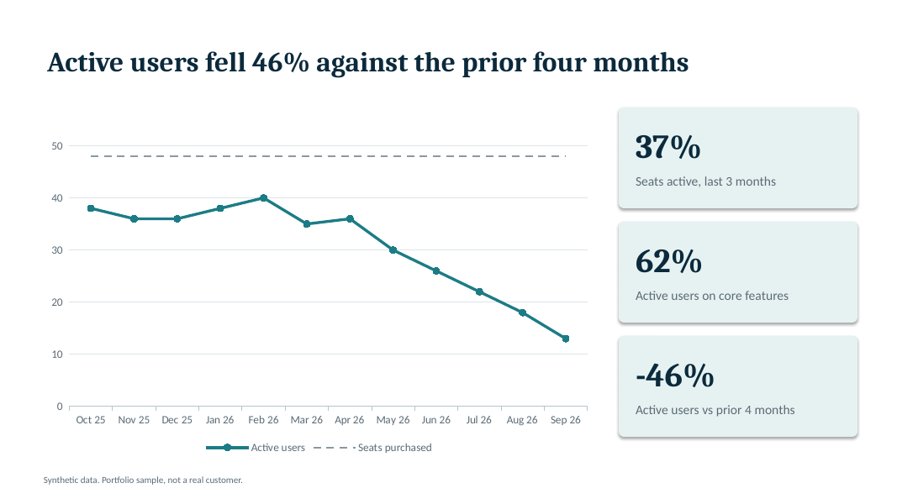
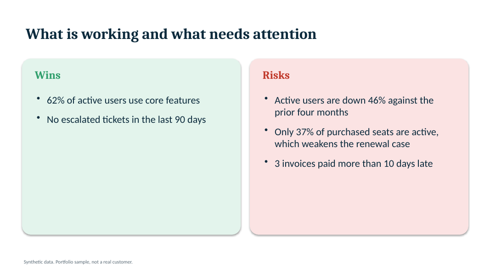
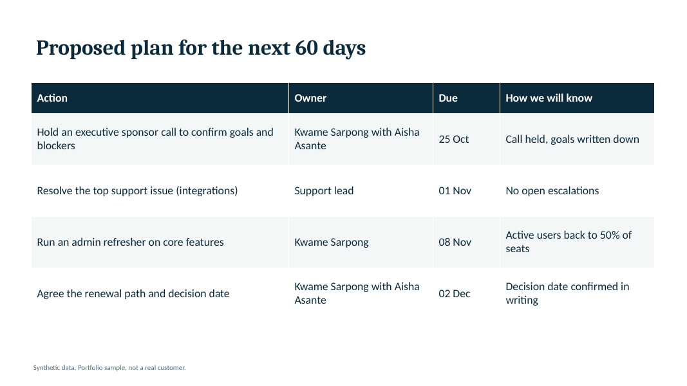

Customer Success Manager
Three working projects that cover the core of a Customer Success role: health scoring, quarterly business reviews, and a renewal plan for every account. Each one runs end to end, and the results come from a backtest I ran and can walk you through.
Data note. The accounts, tickets and usage in these projects are synthetic, generated by my own script so I could test the scoring against known outcomes. The results show the method works on data built to contain those patterns. They are not results from a real customer base.
What these projects show
| Spot churn risk early | A health score tested on 220 past renewals: accounts scored Red churned at 57%, accounts scored Green at 9%. | Project 1 |
|---|---|---|
| Run QBRs without losing a week to prep | 56 customer-specific decks, with charts, risks, a 60-day plan and a renewal ask, generated in about 6 seconds. | Project 2 |
| Keep every renewal on a plan | 168 prioritized tasks and 56 outreach drafts across $290K of MRR, with 8 at-risk accounts flagged for no recent contact. | Project 3 |
Project 1
A 0 to 100 health score for every account, built from usage, support sentiment, escalations, payments and CSM contact, then backtested against what actually happened.
220 past renewals. The dashed line is the overall churn rate (14%).
Twelve open accounts from the sample portfolio. Move a weight and the scores and bands recalculate, as they do in the Excel workbook.
| Account | MRR | Score | Band |
|---|
What it does not prove. At 90 days the score misses most churn: 17 of the 30 churned accounts were still Green. Accounts whose signals only change close to renewal are hard to catch early. The score is a prioritization tool for a CSM's attention, not a prediction.
Project 2
One command writes a 7-slide Quarterly Business Review for every account renewing in the next 90 days. The same health score drives the content, so the story in each deck matches the tracker.




What it does not prove. The decks are first drafts built from rules and templates. A CSM still adds the customer's own goals and product context before presenting. I have not timed a manual QBR, so there is no before-and-after claim here.
Project 3
Every account inside 90 days of renewal gets a stage (T-90, T-60 or T-30), three prioritized tasks, and an outreach draft written for its health band.
| Band | Play at T-90 |
|---|---|
| Green | Value recap, confirm the signer, check fit for more seats |
| Yellow | Adoption check-in and a working session with admins |
| Red | Executive sponsor call and a written recovery plan |
Subject: Wanting to make this work for your team Hi Elena, I am writing directly because the last few months have not gone as well as they should for your team. Here is what I am seeing: active users are down about 31% against the previous few months; your team raised 1 support ticket in 90 days. I would like to hear what is getting in the way. I would also like to bring [executive sponsor name] to the call so we can agree on specific fixes. Do you have 30 minutes this week?
What it does not prove. It has been tested on exported files only, not against a live HubSpot or Gmail account. Nothing is sent automatically.
Background
Contact
Email kwamesarpong25@gmail.com | LinkedIn | adesua.store